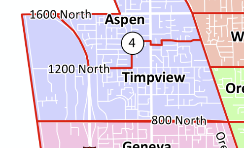

Welcome to Timpview Voices!
Welcome to Timpview Voices!
Chatting with Neighbors, Because You're Stuck Inside, and We're Still Not Dead.
 Episodes
Episodes
 Why We Exist
Why We Exist
Isolation and loneliness are at all-time highs due to COVID-19. The Timpview Voices podcast was created to continue strengthening friendships in the Timpview neighborhood of Orem. We highlight the fun and interesting things about our neighbors who sit in as guests, whether it be their hobbies, their life experiences, or simply their fun personalities.
The boundaries of the Timpview neighborhood extend west-to-east from Geneva Road to State Street, and north-south from roughly 1200-1400 North to 800 North. A map of the neighborhood is below:

 How To Listen
How To Listen
This podcast is available on multiple platforms for your convenience.
| Platform | Status |
|---|---|
| Spotify | Listen |
| Apple iTunes | Listen |
| Google Podcasts | Listen |
If you would like us to publish to an additional platform, feel free to contact us.
 Acknowledgments
Acknowledgments
Credit for the podcast jingle goes to Senses Circuit.
Also, a big thank you to our co-hosts:
- Rebecca Pickett
- Macie Shirley